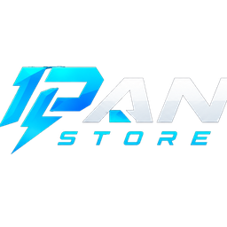

HEADSHOT ALIGNMENT ENGINE
OneTap Vector X
Pertajam arah gerakan untuk tapping yang lebih terkontrol, perpindahan crosshair yang lebih solid, dan placement yang terasa makin on point.

Daftar Akun untuk merasakan Benefit Dari AppSensiX, Optimize Boost FPS dan Optimize emulator dari IpanAppSettinX.
Akun dibuat oleh admin setelah pembelian terverifikasi.
Membaca identitas perangkat
Satu command center buat baca spek hardware, deteksi bottleneck, dan terapkan tweak yang emang sesuai sama PC lo. Tanpa setting acak, tanpa trial-and-error. Langsung pakai.
Deteksi spek hardware PC lo secara real-time dan pantau CPU, GPU, serta RAM dalam grafik live — biar lo tau persis kapan PC lo ngibrit atau mulai ngelag.
Data diperbarui setiap 2,5 detik. Grafik menampilkan 60 sampel terakhir — CPU, GPU, RAM, Disk, dan Jaringan (sumber: performance counter Windows, sama seperti Task Manager).
Pilih optimasi Windows dan gaming yang telah dipisahkan berdasarkan fungsi agar performa terasa lebih responsif tanpa menerapkan paket acak ke setiap PC.
Memuat Tweak Menu.
Jelajahi optimasi tingkat lanjut untuk CPU, GPU, memory, Windows, dan gaming dengan pemeriksaan keamanan sebelum perubahan diteruskan.
Memuat katalog advanced tweak.
Tinggalkan kontrol standar. Aktifkan teknologi eksklusif AppSensiX untuk aim yang lebih tajam, drag lebih eksplosif, dan performa emulator yang siap mendominasi setiap match.
Pertajam arah gerakan untuk tapping yang lebih terkontrol, perpindahan crosshair yang lebih solid, dan placement yang terasa makin on point.
Sinkronkan respons pointer dengan ritme permainan lo untuk menciptakan kontrol yang lebih halus, stabil, dan mematikan di setiap duel.
Lepaskan drag lebih cepat dengan tarikan ringan dan respons eksplosif yang dibuat untuk eksekusi drag shot agresif.
Dorong emulator ke mode performa tinggi untuk gameplay yang lebih ringan, frame lebih stabil, dan respons yang selalu siap tempur.
Deteksi BlueStacks atau MSI App Player dan terapkan tweak performa langsung ke emulator lo.
Belum diperiksa.
Terapkan tweak performa BlueStacks 5: FPS tinggi, alokasi CPU, mode render, dan konfigurasi engine untuk gaming yang lebih lancar.
Terapkan tweak performa MSI App Player: FPS tinggi, alokasi CPU, mode render, dan konfigurasi engine untuk gaming yang lebih lancar.
Pemulihan fitur Windows yang hilang setelah tweaking — kamera, OBS Studio, dan screenshot.
Pulihkan akses kamera yang hilang setelah tweaking agar webcam kembali siap dipakai untuk meeting, streaming, dan aplikasi video.
Pulihkan fungsi capture yang bermasalah agar OBS Studio, perekaman layar, dan screenshot dapat digunakan kembali.
Kembalikan kondisi Windows dengan jalur pemulihan yang jelas ketika perubahan software, driver, atau konfigurasi membuat sistem tidak stabil.
Klik tombol di bawah untuk membuka System Restore bawaan Windows. Fitur ini memungkinkan Anda mengembalikan sistem ke titik pemulihan sebelumnya.
System Restore berguna ketika:
Siap membuka System Restore Windows.
Pantau Smart Scan, pemeriksaan tweak, dan hasil optimasi agar setiap langkah penggunaan aplikasi mudah ditelusuri.
Sesuaikan tampilan Ipan AppSettinX dan simpan preferensi aplikasi untuk pengalaman penggunaan yang lebih nyaman.
Pilih tampilan yang sesuai dengan preferensi Anda.
Optimizer Windows dan emulator yang menggabungkan Smart Scan, tweak terarah, verifikasi, dan Restore untuk pengalaman gaming yang lebih konsisten.
Ipan AppSettinX V1 dirancang untuk membantu gamer menemukan konfigurasi Windows dan emulator yang paling sesuai, mengurangi sumber stutter yang terdeteksi, dan menjaga setiap perubahan tetap dapat ditinjau serta dipulihkan.
Smart Scan membaca kemampuan perangkat lebih dahulu agar tweak Windows dan emulator tidak sekadar menyalin preset milik PC lain.
Profil menargetkan frame pacing stabil, easy drag yang konsisten, dan respons aim yang lebih natural tanpa menyentuh file game atau anti-cheat.
CPU, GPU, memory, storage, jaringan, Windows, dan emulator diperiksa untuk menemukan hambatan yang benar-benar terlihat pada perangkat.
Versi emulator serta kapasitas PC dipertimbangkan sebelum profil Free Fire dipilih, sehingga alokasi resource tetap seimbang.
Perubahan yang didukung melewati pemeriksaan, snapshot, penerapan, dan verifikasi sebelum dinyatakan berhasil.
Ipan AppSettinX menyatukan tuning gaming, optimasi Free Fire, transparansi hasil, dan Restore dalam satu aplikasi lokal yang profesional.